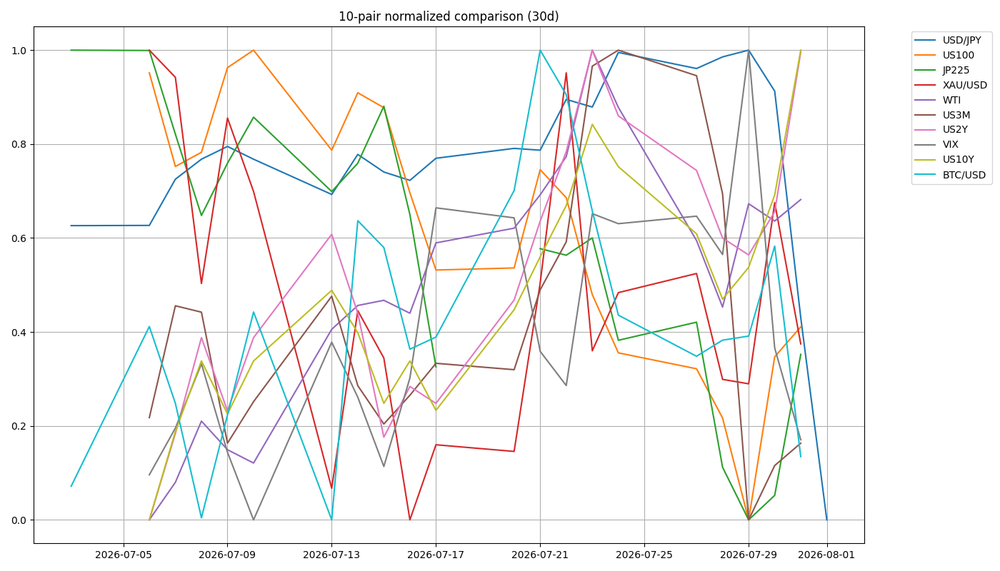
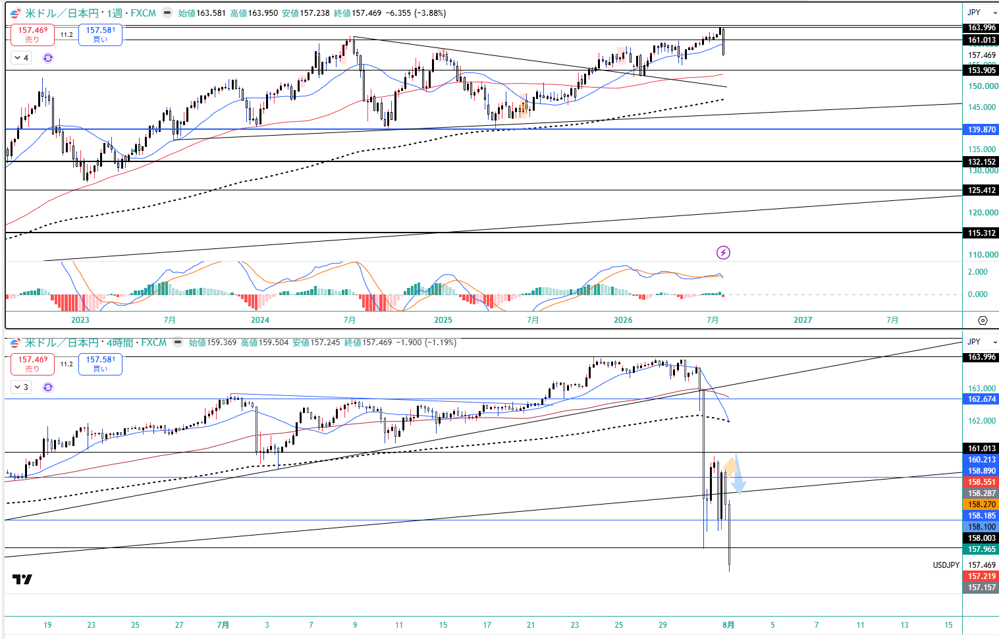
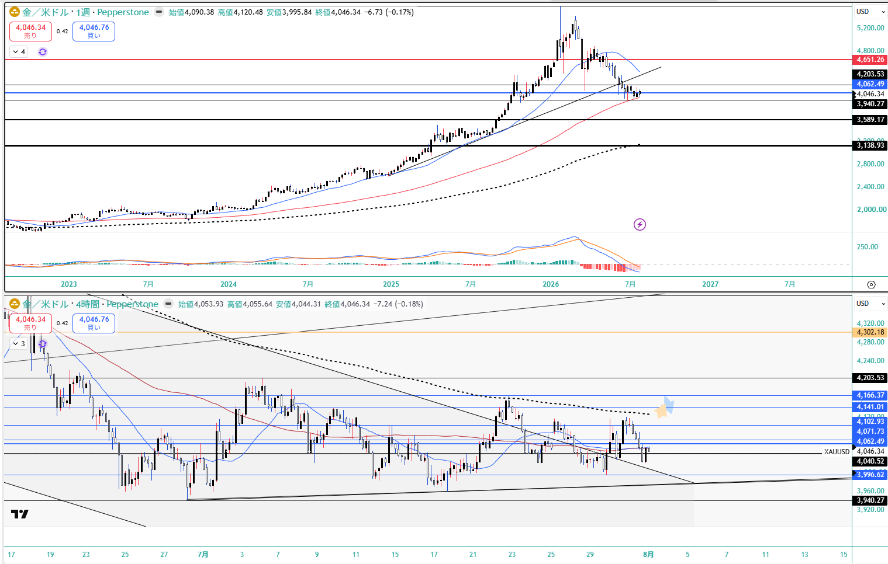
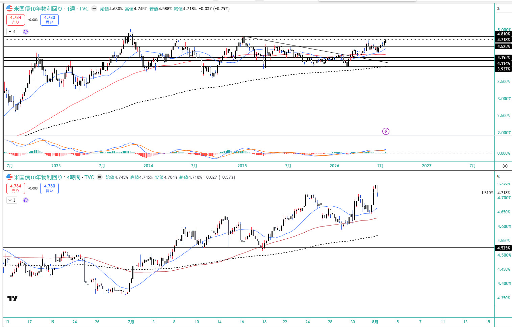
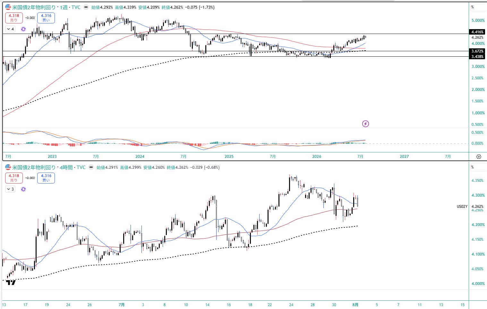
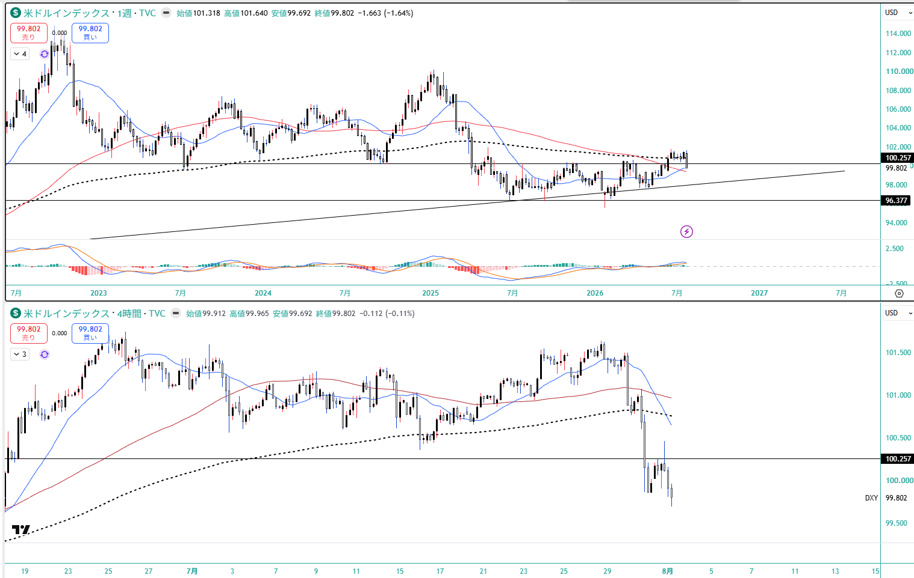
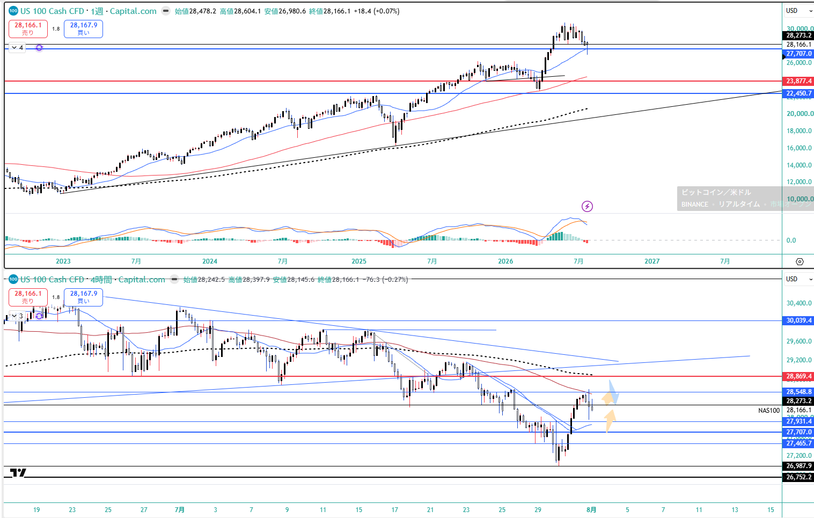
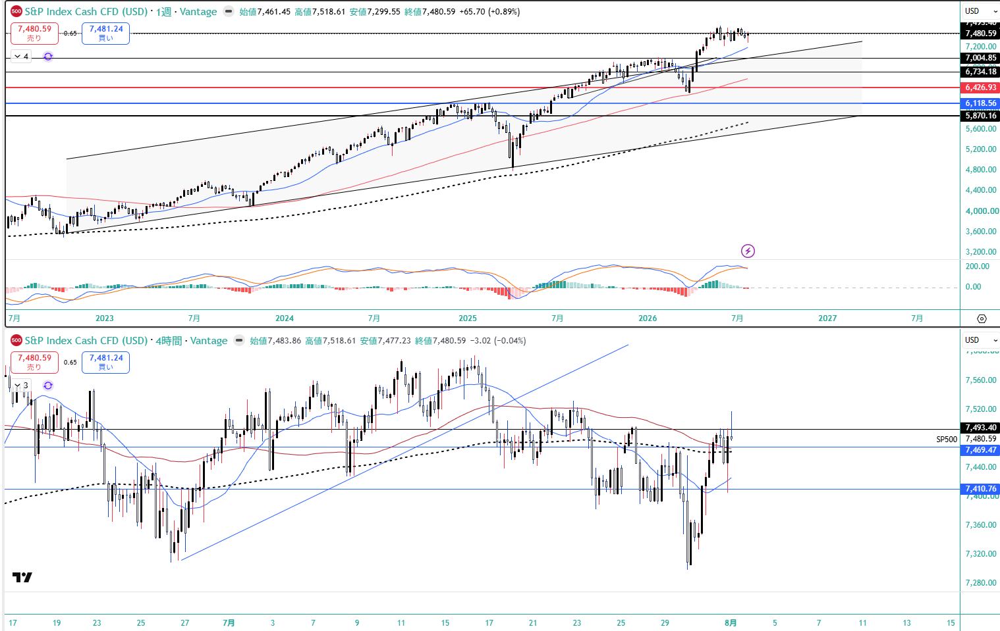
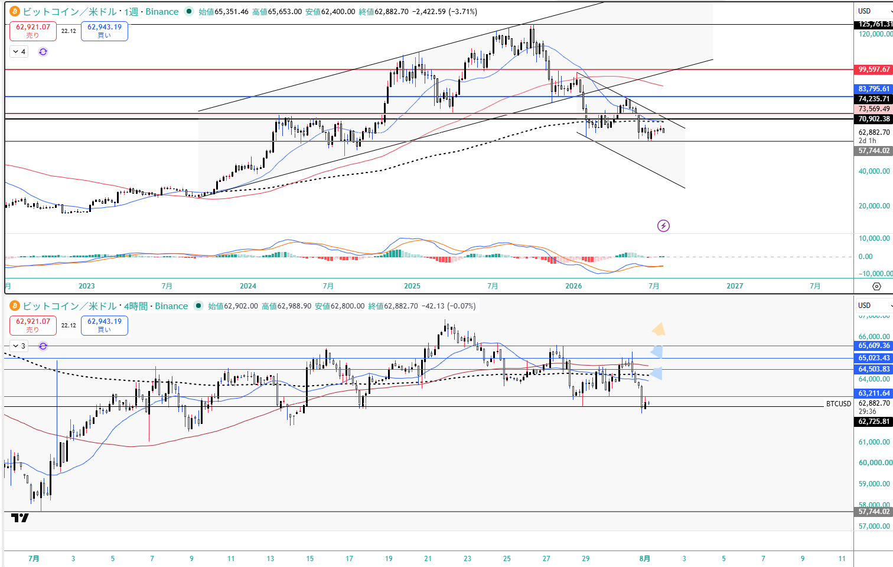

💴 CFD戦略ブリーフ — 8/3週
対象週: 2026-7-31_wk05（データ期間 2026-07-27→07-31 / snapshot 2026-08-02） ｜ ソース: review・meta・snapshot・boss(wr-2026-7-31＝Rex検証メモ§5込み)・添付チャート8点・--trade --news・X実データ ｜ CFD正本: 7/31 21:31 に 0.5Lot を $4,048 で利確（+1.45%）・残1Lot持越し
Regime: Equities Down / Oil Surge（gold=off・crypto=range へ悪化）
Add risk gate: 再開（VIX 15.99<18）
Reduce: caution
介入 coord_stage: executed / IMF残弾 0
★ 15年ぶりの日米協調介入：7/30(木)NY時間に USD/JPY 163→158（円は最大3.3%急騰、ドルは2023年1月以来最大の日次下落）、7/31に米財務省が複数行へ「待機」通告＝レートチェック。
--news #5（読売・8/2）が「日米が協調為替介入 15年ぶり」を確定報道し、Boss検証メモ§5の「当局対応と断定できる報道は無い」保留を正規ソースで解決（執筆8/1より後の報道＝時間差）。
coord_stage は meeting_held → executed へ2段跳躍、imf_ammo_remaining は 1 → 0。
⚠️ IMFエピソード窓と NFP の非対称：「3営業日ルール」の正体は当局の行動を縛る規則ではなく IMF のエピソード計数の慣行（3営業日以内の介入は1回としてカウント）。7/30起点なら 8/3(月)まで同一エピソード、8/4(火)以降の新規介入は4回目で free-floating 分類を逸脱＝日本は枠を使い切った。ただし枠が縛るのは日本の分類であって米財務省の行動ではない。
★ NFP は 8/7(金) で窓の外側に落ちる＝強いNFP→ドル円上昇が日本が撃てない期間に起きる。市場も同じ公開ルールを見ているため8/4以降のドル円ロングは混雑しやすい。→ 日付でエントリーせず「当局が撃たないことを価格が証明した後」（161回復して叩かれない）を待つ。
1. 10ペア 30日スナップショット
| 銘柄 | 最新 | 30日% | wk04→wk05 |
|---|
| USD/JPY | 157.400 | -2.51% | -6.391 (-3.90%) 協調介入 |
| US100 | 28,274.20 | -4.79% | +145.9 (28,173回復) |
| JP225 | 64,362.02 | -7.72% | -249.1 (-0.39%) |
| XAU/USD | 4,049.10 | -2.55% | -18.5 (range→off) |
| WTI | 84.67 / Boss 86.80 | +23.52% | 既知のフィード差 |
| US10Y | 4.745 | +5.94% | +0.066 52週高値4.714を上抜け |
| US2Y (真・Boss) | 4.262 | 週足-1.73% | -0.069 ピークアウト的中 |
| 5Y (^FVX) | 4.460 | +5.91% | +0.034 真2Yと逆方向 |
| US3M | 3.682 | -0.22% | -0.123 (front低下) |
| VIX | 15.990 | +2.70% | -2.59 → 18割れ・gate再開 |
| BTC/USD | 62,813.75 | +0.43% | -1,284.8 63,800.5割れ的中 |
Boss週足実測: USDJPY 157.469(-3.88%) 高値163.950/安値157.238 ／ SP500 7,480.59(+0.89%) ／ NAS100 28,166.1（安値26,980.6からの戻り） ／ Gold 4,046.34(-0.17%) 安値3,995.84 ／ DXY 99.802(-1.64%) 安値99.692 ／ EURUSD 1.1529 ／ BTC 62,882.70(-3.71%)
10ペア30日 正規化プロット

2. ★ 金利カーブ — 3m10s がツイストを捉え、5s10s は取り逃がした
3m10s（主ゲージ）+106.3bp / bull_steepening（+18.9bp）
5s10s（^FVX=5y proxy）+28.5bp / stable（Δ+1.7bp）＝無反応
★ 真の 2s10s（Boss）+45.6bp（wk04 +34.8bp → +10.8bp スティープ化）
belly_premium+26.0bp（wk04 +19.5bp から拡大）
structure / recessionbelly_elevated / positive（逆イールドは遠い）
Boss は今週を「ツイスト・スティープナー」と命名（US2Y 週足-1.73%＝低下 vs US10Y +0.79%＝上昇）。「Fedは本気で連続利上げする気がない」＝インフレ抑制の信認低下を示す、という債券ストラテジストの読み。
なぜ 5s10s は見えなかったか：機械の"US2Y"枠は ^FVX=5年債proxyで、5Yはbelly（中腹）にあり政策感応度が低い。今週は真の2年債が -0.069 下がったのに 5Y proxy は +0.034 上がった＝逆方向。
なぜ 3m10s は捉えたか：^IRX=3M は政策金利の近接で、真の2年債と同方向に -0.123 低下した。
→ 2026-06-27 の年輪で主ゲージを3m10sにした判断が実測で証明され、同時に「proxyの限界は方向を誇張するだけでなく、方向転換を検知できない形でも出る」という caveat を §7 に書き足した。
実務：強いNFP → US2Yが4.34〜4.42%へ急騰 → カーブがフラット化 → 株と金にダブルパンチという伝播順。雇用統計当日は2年債の反応を最初に確認する。
3. レジーム & ゲート状況
機械レジーム
Equities Down / Oil Surge
equities=down / vol=normal / oil=surge / gold=off / crypto=range / yields=rising
wk04から gold range→off・crypto strong→range と内部悪化
Add risk ゲート
再開
VIX 15.99 < 18（wk03/wk04の2週連続閉鎖から転換）。ただしBossの時間軸観「8/10の週から一段の下落を警戒＝8/10までは上値を試す」＝期間限定の上値トライ許可で全面リスクオンではない
介入 coord_stage
executed
4段梯子の着弾（meeting_held→executed の2段跳躍）。imf_ammo_remaining = 0／zone=calm（157.40 < watch_zone 161.0）／8/3まで同一エピソード窓
4. シナリオ（5分岐 — ★D は Boss §5② が補った欠落）
メイン（確率高）8/10までリバウンド継続・株は押し目買い／円は月曜まで戻り売り→火曜以降切替
A 金利主導の株安NFP上振れ→9月利上げ確率80%超→US10Y 4.81%突破→NAS100 27,700割れ・日経64,500割れ
B 地政学エスカレーションWTI 88.5上抜け→インフレ期待急騰→株安・金だけ反転・ドル高
C 円高トレンド化ドル円157.15割れ→153.9。日本株の輸出セクターに強い逆風
★D ドル全面安の継続DXY 99.69割れ→ゴールドの「戻り売り優位」が前提ごと反転
D の位置づけ（Boss §5②）：本文はEUR/USD節で「DXY週足は96.377まで大きなサポート空白」と正しく指摘しながら、シナリオ分岐に反映していなかった。結論はBと同じ「金高」だが経路が違う。再来条件は①NFP大幅未達 ②米財務省のドル安容認発言の追加 ③30年のさらなる上昇（信認劣化のドル安）。ゴールドのレンジ上抜けはこの経路でしか起きないため、DXY 99.69 を単独の監視ラインとして持つ。現値 99.802＝わずか0.11の距離。
5. CFD 銘柄別アクションプラン
USD/JPY 協調介入後・枠切れ
週足
157.469（-3.88%）高値163.950→安値157.238の激しい陰線。4H最終足 159.369→157.245。
8/3(月)まではIMF同一エピソード窓＝追加介入余地あり。
上=161.0（0.5戻し＝売りゾーン）・戻りの限界160.2〜161.0 ／ 週足の壁 162.674・163.996 ／ 下=157.15割れで153.9 ／ 「金曜と月曜は上がっても売り」「火曜以降はドル買い復帰（9月Fed利上げ観測・有事のドル買い・実需の輸入ドル買い・新NISAの米株フロー）」。15分刻みで反発する介入特有の値動きでストップ必須。
型：日付でエントリーしない。NFP(8/7)が窓の外側という非対称は市場も知っているため8/4以降のロングは混雑しやすい。「当局が撃たないことを価格が証明した後」（161回復して叩かれない）を待つ。市場評価は冷ややかで「介入は持続的な円高をもたらさず、BOJの利上げがなければ円の見通しは改善しない」（X市況も「金利差は残るので時間稼ぎ」で持続性に懐疑優勢）。
Gold (XAU) 0.5Lot利確 +1.45% / 残1Lot
週足
4,046.34（-0.17%）高値4,120.48／安値3,995.84。
gold range→off に悪化。
7/31 21:31 に 0.5Lot を $4,048 で利確（+1.45%）、トリガーは
週足Fibo38.2の $4,062 割れ。終値で$4,040の地固めを確認し
残1Lotを持越し。
上=4,120〜4,166が戻り売りゾーン（4,166を終値で上抜けるまでは戻り売り優位） ／ 下=3,996〜3,940がサポート帯・最終防衛は日足ネック$3,950（日足実体割れで三角フラッグ上抜けの根拠が否定） ／ 方向感なし＝サイズを落とすが最も合理的。
今週最大の tell：協調介入＋ハト派FOMC＋GDP未達という最もドルネガティブな週に金は週足で下げて引けた。「ドル安の質」が木曜（DXY-0.8%の全面安→金4,120まで上昇）と金曜（DXY反発・円だけ強い）で変わり、金はDXYに追随しUSD/JPYには追随しなかった。名目=実質+BE で7/29は実質+6bp・BE+5bpの同時上昇＝タームプレミアム／ソブリン信用の再評価の象限＝方向を論理で導出できずフローの量で決まる。レンジを上に破るのは「インフレが出ること」ではなく実質金利が下がることで、種はQ2 GDP 1.5%の未達。
US100 / SP500 選別リスクオン・レンジ内往復
US100 28,274（
wk04の生死ライン28,173を回復）、Boss実測NAS100 28,166.1で週足は
26,980まで突っ込んでからの戻り。SP500
7,480.59（+0.89%）は4Hで7,300割れの底から
V字で7,469/7,493を回復、史上最高値から約1.6%下＝
戻り高値圏のレンジ。
NAS100 上=28,500〜28,800が売り手優勢（28,700〜28,800をヒゲで貫通してから28,280へ調整の想定） ／ 下=28,000割れ〜27,700が拾い場（27,800→28,160の反発は取れるが大きくは描けない＝ダマシ注意） ／ SP500 上7,493→7,518・下7,469/7,410/7,200。NFPと10年金利4.75%超えが上値を潰す最大のトリガーで、越えたらロング目線は一旦停止。
AI capex懸念は「選別」へ決着：AWS +37%（予想31%・2021年以来最速）／Azure +43%／Alphabet +82%、Amazonは設備投資を$2,200億へ引き上げてなお時間外+10%＝市場は「capexの大きさ」でなく「回収の器を持つか」で評価。Metaのみ-8.8%（器を持たない広告会社）、Apple -4%。→ 株の反発はクラウドを持つ側だけ。
JP225 寄り天リスク・押し目の信頼度は高い
64,362.02（★Boss §5が「週足終値が本文に無い」と挙げた欠落を機械実測が補完し、Boss水準と整合を確認）。大枠は「
6万円を割り込むまでは上昇相場」。
上=65,500前後が利確ゾーン ／ 下=64,500前後が押し目 ／ 月曜は「ズドンと上がって、グンと調整して終わる」ギャップアップ型＝寄り天リスクが高く飛びつかない ／ 米株と違い日経は反発を大きく描ける＝押し目の信頼度が高い ／ ドル円の介入タイミングと日経の上値は逆相関で見る。材料はキオクシアの歴史的出来高（売買代金 約3兆6,953億円）でストップ高・5月の窓埋め完了＋サムスン決算＋韓国の売り枯れ。
WTI 押し目買いだが 88.53 が switch
機械(CL=F) 84.670（30日+23.52%・surge継続）／ Boss 4H
86.80（+2.48%）・週足は乱高下（高値86.87／安値77.78）＝
既知のフィード差。7月は3月以来の月間上昇率で主因は
ホルムズ海峡でのタンカー引き返し報道。
上=88.53（下降トレンドライン）が強い抵抗、上抜け＝株・債券のリスクシナリオ発動とセットで監視 ／ 85.87→88.3の上昇、81付近からの反発→83 ／ 下=76.73への急落リスク ／ 「戦争は終わらないので押し目は買われる」が、原油ロングはイベントヘッドラインに脆い。--news #2（米国とイスラエルがイランのエネルギー施設に過去最大級の爆撃を計画、トランプは最終判断せず）が上値の燃料。
BTC/USD リスクオンに劣後＝先行指標
週足
62,882.70（-3.71%）高値65,653／安値62,400。
crypto strong→range。
wk04の分岐63,800.5を割り込み＝下落シナリオ的中。
株がリスクオンで大幅高・SOX+8%という環境にもかかわらず上がりきれていないのが最大の警戒材料で、週足は下降チャネル内・20週線と50週線を下回る。
上=65,000〜65,600が売りゾーン（65,609を明確に上抜ければ相対的弱さの解消サイン） ／ 下=62,725割れで57,744へターゲット拡大 ／ リスクオン相場についていけない資産はリスクオフ転換時の下落が最も速い＝株が崩れた場合の先行指標。X市況は約90セッションで NQ +14.5% vs BTC -8.6% と定量化（@FRDMCrypto）、規制の固有ヘッドウィンドにも言及。
EUR/USD 1.148〜1.155 の狭いレンジ・押し目買い基調
金曜終値
1.1529前後。DXY週足
99.802（-1.64%）で
100.257の節目を明確に割り込んだ弱いドル。DXY週足では
96.377まで大きなサポート空白。
下=1.148割れがレンジ崩壊のサイン（1.149付近が大底との見立て） ／ 上=1.155〜1.160が戻り売りゾーン ／ ドイツのインフレ率が3か月ぶり高水準→ECBは引き締め方向→ユーロ安は加速しにくい ／ DXYが99.69を割れる展開なら上放れを優先。
6. 週内タイムライン
- 8/3(月) IMF同一エピソード窓の最終日。追加介入しても回数が増えない＝「金曜と月曜は上がっても売り」。日経はギャップアップ型で寄り天リスク。
- 8/4(火) 日本は枠切れ（新規介入は4回目＝分類逸脱）。ただし米財務省は枠の外。SPCX 決算（保有10株）。ドル円は日付でなく価格の証明（161回復して叩かれない）を待つ。
- 8/6(木) SPCX 最大9億1,150万株のロックアップ解除（決算の2日後）。2025年12月期は売上高 前年比+33%の186億ドル・営業損失25.9億ドル。
- 8/7(金) 米7月雇用統計（NFP）：予想 +8.3万人／失業率4.3%。グッドニュース・イズ・バッドニュース。★介入エピソード窓の外側に落ちる非対称。当日は2年債の反応を最初に確認。
- 週内随時 DXY 99.69（金の単独スイッチ）／US10Y 4.745-4.810／WTI 88.53／米イラン情勢（過去最大級の爆撃計画報道）／日本の半導体決算。
7. 監視トリガー（毎朝チェック）
US10Y 4.745〜4.810% 上抜け→ 株のバリュエーション圧迫が加速（株ロングの最重要リスク指標）
強いNFPで US2Y 4.34〜4.42% へ急騰→ カーブがフラット化して株と金にダブルパンチ
★ DXY 99.69 割れ→ ゴールドの「戻り売り優位」が前提ごと反転（現値99.802＝0.11の距離）
USDJPY 161.0（0.5戻し）／ 157.15 割れ→ 売りゾーン ／ 153.9 へ
Gold 4,062 / 4,040 / 3,950（最終防衛）→ 4,062割れ済＝レンジ内リスクは下寄り。3,950で持越し根拠が否定
WTI 88.53 上抜け→ インフレ期待急騰・株安・金だけ反転
US100 28,500-28,800 / 28,000-27,700→ 売り手優勢ゾーン / 拾い場
BTC 62,725 割れ→ 57,744へ。株が崩れた場合の先行指標
8. Boss提供チャート（週足＋4H / 2026-07-31 close）
USD/JPY — 協調介入の激しい陰線
XAU/USD — 週足Fibo38.2(4,062)を割って引け
US10Y — 52週高値4.714を上抜け（金曜4.745）
US2Y — 週足-1.73%＝ツイストの短期側
DXY — 100.257を明確に割り込み（下は96.377まで空白）
US100 — 安値26,980からの戻り
S&P500 — +0.89%・戻り高値圏レンジ
BTC/USD — 株高でも上がりきれず -3.71%
9. GMポートフォリオ（2026-07-31 15:17）
総資産
4,833,577円
前週 4,874,946円 → -41,369円／ただし前日比 +150,811円（+3.22%）＝金曜単日の急伸
評価損益
+256,719円 / +5.60%
前週 +298,667円 / +6.52%
株数変更
なし
東証・米国株とも変更なし。長期コアは維持
国内株式(現物)4,385,900円 / +355,295円 / +8.81%（前日比 +158,551円）
米国株式445,969円 / -98,576円 / -18.10%（外貨建 2,774.48 USD / -604.36 USD）
★ 米国株は外貨建で +35.57 USD 改善したのに円換算では -2,773円 悪化＝協調介入による円高が円換算評価を押し下げた（円高が続くなら外貨建資産の円換算は構造的に重い）。
内部ローテーション：ファナック +46,400・GXロボ&AI +14,668 が牽引、GX半導体 -50,460・安川電 -20,400・三菱重 -16,400 が重し＝同じ「半導体・FA」でも銘柄で明暗（SOX+8%の週にGX半導体ETFが下がったのは週前半の急落を金曜の反発で取り戻しきれなかったため）。NF日経エンタメ(586A)は -180→+870円で黒字転換。
★ SPCX（保有10株・-378.60 USD＝米国株で最大の含み損）は 8/4 決算 ＋ 8/6 最大9億1,150万株のロックアップ解除が中2日で連続（2025年12月期 売上高 前年比+33%の186億ドル・営業損失25.9億ドル）。
⚠️ 本資料は 2026-7-31_wk05 の確定データ（snapshot 2026-08-02 / review / meta / Boss市況 wr-2026-7-31＝
Rex検証メモ§5込み / 添付チャート8点 / --news / X実データ / 口座画像）に基づく整理であり、創作・ソース外情報は含まない。
★
本週の3つの実証：①
3m10sがツイスト・スティープナーを捉え5s10sは無反応(stable)＝
2026-06-27の年輪で主ゲージを3m10sにした判断が実測で証明され、§7に「
proxyの限界は方向を誇張するだけでなく方向転換を検知できない形でも出る」を追記。②
JP225実測 64,362.02 がBoss §5の「週足終値が本文に無い」欠落を補完。③
relative_strength が currency_effect の符号反転（+1.11pt→-2.37pt＝「円安が良く見せる」から「円高が悪く見せる」へ）を自動検知。
★
X-Searchが3週ぶりに復旧（原因は①
x_search toolset が disabled ②アクティブprofileが
gpt(OpenAI Codex) で Grok でなかった／恒久コマンド
hermes -p grok -z "<query>" -t x_search,web,vision --accept-hooks）。
@42Macroのツイストスティープ言及・
NQ+14.5% vs BTC-8.6%・金の「古典的な逆相関が壊れている」違和感などがBossの読みを補強したが、
各ポストは市場参加者の解釈であり1次報道とはレイヤーを分ける（エンゲージメント順位は厳密でない／8.45兆円等はX上の推定で公式確定値ではない）。
WTI は機械(CL=F)とBoss参照フィードに
既知の乖離あり（Boss §5が明記）。Boss §5の未確定項目（KOSPI +17.91%の基準／SpaceX決算日付）は
確定させていない。
投資助言ではなく GM運用の作戦整理。最終判断はミナト。 生成: ClaudeCode / 2026-08-02。